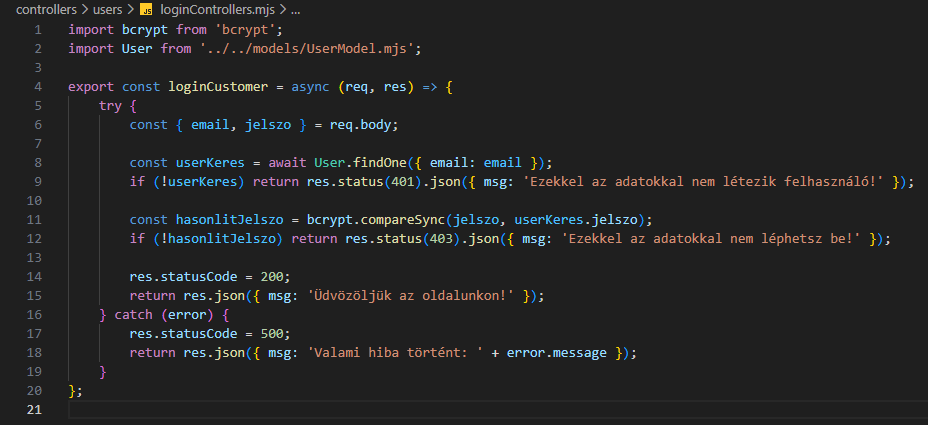

Bejelentkezés kezelése - loginControllers.mjs
Bejelentkezés kezelése - loginControllers.mjs

Ebben a részben szerkesztjük a controllers/users mappában a loginControllers.mjs állományt, amelyben kidolgozzuk a CRUD Creat művelethez tartozó logikát. Ez megfelel a http POST metódus-hoz tartozó logikának.
-
Szerkesszük a
loginControllers.mjsállományunkat.-
import bcrypt from 'bcrypt';- adotenvnpmcsomag beimportálása. -
import User from '../models/UserModel.mjs';- aUsermodell alapértelmezett beimportálása. -
export const loginCustomer = (req, res) => {...};- hozzuk létre és vigyük ki nevesítve ahttp POST metódus-hoz tartozó logikát (CreataCRUDműveletekből). -
try {... res.statusCode = 200; return res.json({ msg: 'Üdvözöljük az oldalunkon!' });}- a sikeres ág a 200-ashttp hibakód-dal. -
const {...} = req.body;- areq.bodydekonstrukciója. -
const userKeres = await User.findOne({ email: email });- nézzük meg, hogy az adott e-mail címmel van a felhasználó. -
if (!userKeres) return res.status(401).json({ msg: 'Ezekkel az adatokkal nem létezik felhasználó!' });- ha még nincs, akkor ezt jelezzük a 401-eshttp hibakód-dal. -
const hasonlitJelszo = bcrypt.compareSync(jelszo, userKeres.jelszo);- hasonlítsuk össze a kapott jelszót az adatbázisban tárolttal. -
if (!hasonlitJelszo) return res.status(403).json({ msg: 'Ezekkel az adatokkal nem léphetsz be!' });- ha a kettő nem egyezik, akkor ezt jelezzük a 403-ashttp hibakód-dal. -
catch (error) { res.statusCode = 500; return res.json({ msg: 'Valami hiba történt!' + error.message });}- a sikertelen ág a 500-ashttp hibakód-dal.
-